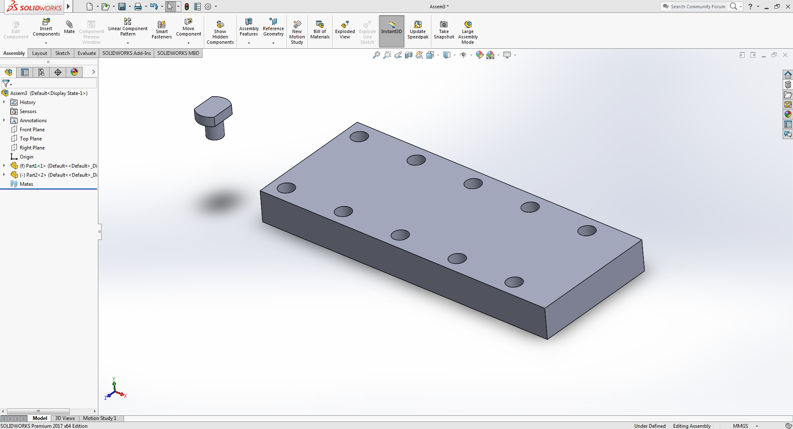
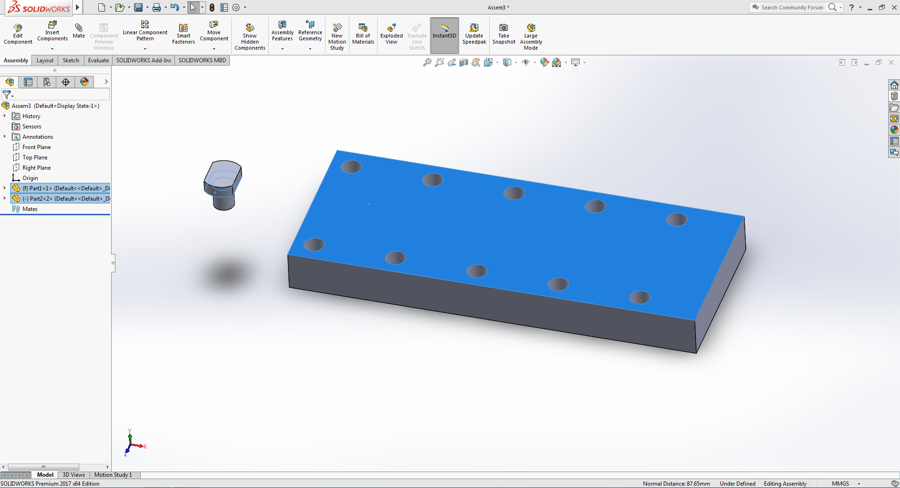
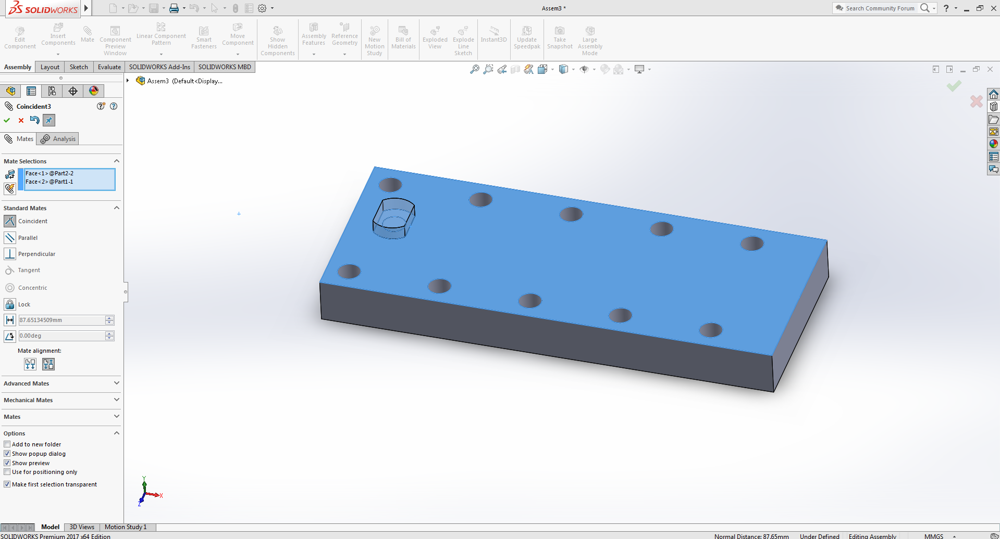
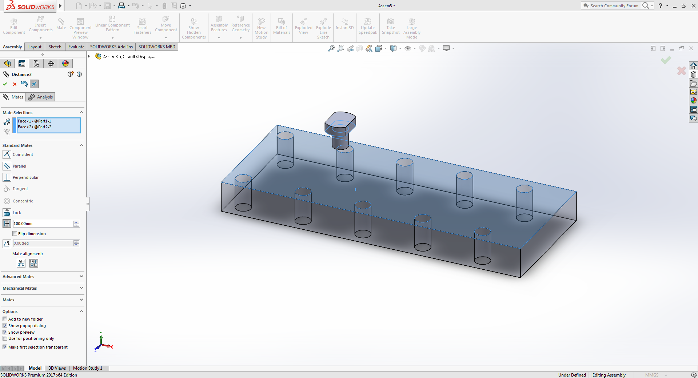

Distance Mate
Specifies a distance between two components planes, faces, or edges.
Example:
Download Example parts

-
Open Solidworks, create new file, choose assembly mode and select the downloaded parts.
Click on the image to activate the zoom functionality,for better viewing use devices with bigger screens -
Select the faces of the part as given below in the image
 -
Solidworks will smartly select coincident mate for the selected faces
 -
Unchoose the preselected mate and choose the distance mate under the standard mate dropown, and specify a given distance value
here we have given a distance of 100mm in the distance mate tab